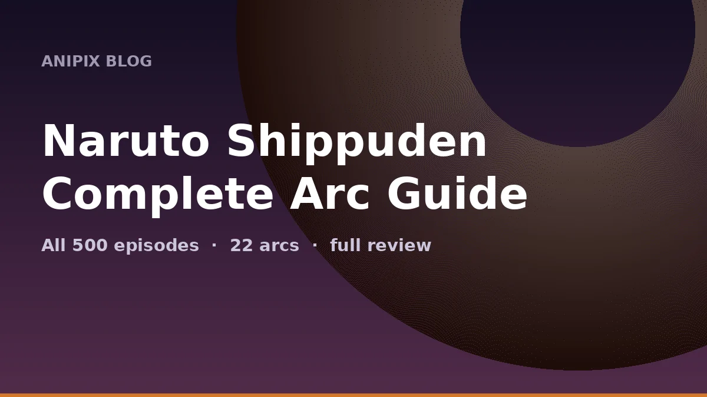

Naruto Shippuden: Complete Arc Guide, Every Episode Explained and Full Review

Last updated: 20 October 2026
Naruto Shippuden ran for ten years, from February 2007 to March 2017, and finished at exactly 500 episodes. That is a lot of television — and a big part of why so many people who start it never finish it. This guide breaks all 500 episodes into the 22 story arcs they actually belong to, tells you what happens in each, which ones are filler, and gives every arc a score.
If you are watching for the first time, or coming back after years away, this is the map. Arc boundaries are listed as they are most commonly given — different sources draw the lines slightly differently, because the anime ran year-round and mixed canon and filler inside single seasons.
Quick facts
- Episodes: 500
- Ran: 15 February 2007 – 23 March 2017
- Studio: Pierrot
- Director: Hayato Date
- Story arcs: 22 (29 by the anime's own count, which splits some arcs further)
- Source: Part II of Masashi Kishimoto's manga, plus a significant amount of anime-original material
Canon vs filler — the short version
Shippuden has a lot of filler, and it is not evenly spread. The first 175 episodes are mostly canon with two filler blocks. The war arc, which runs from roughly episode 215 to 479, is where the filler problem becomes real.
If you want the main story only, the arcs marked Canon below are the ones to watch. Arcs marked Filler can be skipped without losing the plot. Arcs marked Mixed contain both, and are harder to skip cleanly.
Two filler arcs are genuinely worth your time: Kakashi's Anbu Arc (349–361) and the Power Arc (290–295). Everything else is optional.
Arc 1: Kazekage Rescue Mission (Episodes 1–32)
Type: Canon · Score: 9.0/10
Two and a half years after leaving with Jiraiya, Naruto comes home — taller, stronger, and still wearing orange. Almost immediately the Akatsuki kidnap Gaara, now the Kazekage of the Hidden Sand, to extract the One-Tail. Team Kakashi races to Suna, and Sakura finally gets the fight she deserved, taking on the puppet master Sasori alongside the elderly Chiyo.
Verdict: The best possible way to open a sequel. It re-establishes everyone, introduces the Akatsuki as a real threat, and gives Sakura her best arc in the whole series.
Arc 2: Tenchi Bridge Reconnaissance Mission (Episodes 33–53)
Type: Canon · Score: 8.0/10
Team Kakashi gets a new captain, Yamato, and a new member: Sai, a blunt, socially hopeless Root operative with a fake smile. Their mission is to meet a spy inside Orochimaru's ranks at the Tenchi Bridge. It ends the way everyone feared — with Naruto losing control of the Nine-Tails and finally seeing Sasuke again, who makes it very clear he wants nothing to do with them.
Verdict: Sai's introduction is great, and the reunion scene is genuinely painful to watch. The middle stretch drags a little.
Arc 3: Twelve Guardian Ninja (Episodes 54–71)
Type: Filler · Score: 6.0/10
An anime-original arc about the former twelve elite bodyguards of the Land of Fire and a mystery tied to Asuma's past. It sets up Asuma's connection to the Akatsuki members he is about to face, which is genuinely useful, but the arc itself wanders.
Verdict: Skip it if you are in a hurry. The one thing worth knowing — Asuma's history — is explained again later anyway.
Arc 4: Akatsuki Suppression Mission (Episodes 72–88)
Type: Canon · Score: 9.5/10
The immortal duo Hidan and Kakuzu hunt the Two-Tails' jinchuriki, and Team 10 is sent after them. Asuma does not come back from that fight. What follows is Shikamaru's arc: a grieving, furious, brilliantly cold revenge story, and Naruto's debut of the Rasenshuriken.
Verdict: One of the best arcs in the series. Asuma's death is handled with real weight, and Shikamaru's growth from lazy genius to team leader is the payoff the character had been building towards since Part 1.
Arc 5: Three-Tails' Appearance (Episodes 89–112)
Type: Filler · Score: 5.5/10
A long anime-original arc about capturing the Three-Tails, introducing the crystal-user Guren and a boy named Yūkimaru. It is the longest filler block in the first half of the show.
Verdict: The most skippable arc in Shippuden. Twenty-four episodes of padding in the middle of a canon hot streak.
Arc 6: Itachi Pursuit Mission (Episodes 113–118)
Type: Canon · Score: 8.0/10
Sasuke assembles his own team — Hebi, with Suigetsu, Karin and Jugo — with one goal: find and kill Itachi. Meanwhile Konoha launches its own pursuit, hoping to reach Sasuke first.
Verdict: Short and focused. Team Hebi is a fun, strange addition, and it sets up everything that follows.
Arc 7: Tale of Jiraiya the Gallant (Episodes 127–133)
Type: Canon · Score: 10.0/10
Jiraiya goes alone into the Hidden Rain to find out who Pain really is. He does find out. He also fights the Six Paths of Pain, loses, and sends one last coded message home. The arc is framed by the story of the book he wrote — the one Naruto is named after.
Verdict: The emotional high point of the entire series. Seven episodes, no wasted scenes, and one of the best character send-offs in anime.
Arc 8: Fated Battle Between Brothers (Episodes 134–143)
Type: Canon · Score: 9.5/10
Sasuke finally faces Itachi. It is a long, brutal fight built on genjutsu, and Sasuke wins. Then Tobi tells him the truth about the Uchiha massacre — and everything Sasuke believed about his brother, and about his own life, collapses.
Verdict: The reveal lands like a truck. It re-colours the entire series retroactively, which is a very hard trick to pull off.
Arc 9: Pain's Assault (Episodes 152–175)
Type: Canon · Score: 10.0/10
Pain levels Konoha. The village is destroyed, Kakashi is killed, and Naruto returns to fight the strongest opponent he has faced. Hinata confesses her feelings mid-battle and is cut down in front of him, which finally breaks the seal on the Nine-Tails. The arc ends with Naruto choosing to forgive Nagato rather than kill him — and Nagato bringing everyone back.
Verdict: The peak of Shippuden. The scale, the animation, the emotional beats, and the fact that the hero wins by refusing revenge rather than by being stronger.
Arc 10: Past Arc: The Locus of Konoha (Episodes 176–196)
Type: Filler · Score: 6.5/10
A set of standalone episodes set while Konoha rebuilds. Flashbacks and side stories about Iruka, Kakashi, Inari, and others.
Verdict: Filler, but unusually good filler. If you like the supporting cast, these are worth watching between the big arcs.
Arc 11: Five Kage Summit (Episodes 197–214)
Type: Canon · Score: 8.5/10
All five great nations meet to decide what to do about the Akatsuki. Sasuke crashes the summit, fights the Kage, and kills Danzo. Naruto, meanwhile, has to confront a question he has been avoiding: what do you do when your friend cannot be saved?
Verdict: Politically the most interesting arc. It also gives Sasuke his darkest moment and Naruto his hardest decision.
Arc 12: Fourth Great Ninja War: Countdown (Episodes 215–222 & 243–256)
Type: Mixed · Score: 7.5/10
The Allied Shinobi Forces form. Naruto is hidden away on an island to train with Killer Bee and learn to control the Nine-Tails, while the war preparations roll on around him.
Verdict: Necessary setup. The training sequence is good; the filler detours around it are not.
Arc 13: Fourth Great Ninja War: Confrontation (Episodes 261–289 & 296–321)
Type: Mixed · Score: 8.0/10
The war begins in earnest. The Allied Forces fight an army of White Zetsu clones and reanimated legends, including the resurrected Kage and former Akatsuki members. Itachi, brought back by Kabuto's jutsu, breaks free and teams up with Naruto to stop it.
Verdict: Huge in scale and full of great individual fights. It is also where the pacing starts to become a problem.
Arc 14: Power Arc (Episodes 290–295)
Type: Filler · Score: 7.0/10
A short, high-budget filler arc made to mark 500 total Naruto episodes. Team Kakashi investigates a massacre in Tonika Village and fights a resurrected Kabuto's creation.
Verdict: Genuinely well animated, and short enough not to hurt. One of the better filler arcs.
Arc 15: Fourth Great Ninja War: Climax (Episodes 322–348 & 362–375)
Type: Mixed · Score: 8.5/10
Naruto joins the battlefield properly. Tobi's identity is finally revealed, and the reanimated Madara Uchiha appears and single-handedly changes the course of the war.
Verdict: Madara's entrance is one of the great anime moments. The arc around it is uneven but the highs are very high.
Arc 16: Kakashi's Anbu Arc (Episodes 349–361)
Type: Filler · Score: 8.0/10
A flashback arc covering Kakashi's years in the Anbu Black Ops, his relationship with a young Itachi, and the years between the Kannabi Bridge and the start of the series.
Verdict: The best filler arc in Shippuden. It fills a real gap in the story and treats Kakashi like the main character he arguably is.
Arc 17: Birth of the Ten-Tails' Jinchuriki (Episodes 378–388 & 391–413)
Type: Canon · Score: 8.5/10
Obito becomes the Ten-Tails' jinchuriki. The entire Allied Force — including a reformed Team 7 fighting side by side for the first time in years — has to stop him.
Verdict: The Team 7 reunion on the battlefield is exactly what the whole series was building towards.
Arc 18: Kaguya Otsutsuki Strikes (Episodes 414–479)
Type: Mixed · Score: 7.0/10
Just as Madara seems finished, Black Zetsu betrays him and revives Kaguya Otsutsuki, the original source of chakra. Team 7 is thrown across dimensions in a final battle to stop the Infinite Tsukuyomi.
Verdict: Kaguya's arrival is divisive. The fight is spectacular; the villain switch is not what most fans wanted.
Arc 19: Childhood Arc (Episodes 480–483)
Type: Filler · Score: 7.0/10
Short flashback episodes showing the main cast as children at the academy.
Verdict: Light, warm, and easy to watch after the war. Nothing essential.
Arc 20: Sasuke's Story: Sunrise (Episodes 484–488)
Type: Canon · Score: 8.0/10
Adapted from a light novel. Sasuke travels alone on a path of redemption, investigating a mystery involving people who explode and a shadowy organisation.
Verdict: A quieter, more mature Sasuke. It is a good epilogue to his character.
Arc 21: Shikamaru's Story (Episodes 489–493)
Type: Canon · Score: 7.5/10
Years after the war, Shikamaru takes a dangerous mission in the Land of Silence while dealing with what it means to be a leader in a shinobi world that is changing.
Verdict: Another novel adaptation, and a solid one. Shikamaru has earned his own story.
Arc 22: Konoha Hiden: The Perfect Day for a Wedding (Episodes 494–500)
Type: Canon · Score: 8.5/10
The final arc. Kakashi sends everyone on the hardest mission of their lives: finding the perfect wedding gift for Naruto and Hinata. It ends with the wedding, and with Iruka narrating the story of the boy nobody wanted, who became the Seventh Hokage.
Verdict: A soft, funny, deeply satisfying ending. After 500 episodes, the show earns its happy ending.
The best arcs, ranked
- Tale of Jiraiya the Gallant (127–133) — seven episodes, one gut punch
- Pain's Assault (152–175) — the peak of the series
- Akatsuki Suppression Mission (72–88) — Shikamaru's revenge
- Fated Battle Between Brothers (134–143) — the reveal that changes everything
- Kazekage Rescue Mission (1–32) — the perfect opening
Overall review
Shippuden is two shows in one. The first half — roughly episodes 1 to 175 — is one of the best stretches of shonen anime ever made. It is tight, it is emotional, it pays off things the original series set up years earlier, and it repeatedly puts Naruto in situations where being strong is not the answer. Jiraiya's death, Pain's assault, Shikamaru's revenge: these are the episodes people remember, and they hold up.
The second half is a different story. The Fourth Great Ninja War is enormous, and enormous is the problem. Hundreds of episodes of fighting, a rotating cast of resurrected characters, and filler blocks dropped into the middle of the climax. The highs are still very high — Madara's entrance, the Team 7 reunion, Kakashi's past — but they are further apart, and the pacing asks a lot of the viewer.
The ending, though, is right. Kaguya is a divisive final villain, and many fans would have preferred Madara to stay the final boss. But the last few arcs — Sasuke's redemption, Shikamaru's story, and the wedding — bring the series down gently. The final episode, with Iruka narrating the life of the boy nobody wanted, is exactly the ending the show had earned.
Final score: 8.5/10. Watch the canon arcs. Skip most of the filler. Do not skip Jiraiya.
Should you watch it in 2026?
Yes, with a caveat. Shippuden is still one of the defining shonen series, and the first 175 episodes are essential viewing for anyone who likes the genre. But it is also 500 episodes, and the second half is a serious commitment. If you are short on time, watch the canon arcs, look up the filler list, and skip the war arc's side stories. You will still get the whole story.
FAQ
How many episodes does Naruto Shippuden have?
Exactly 500, aired between February 2007 and March 2017.
Can I skip the filler?
Yes. The filler arcs are marked above. The main story still makes sense without them, though a few characters introduced in filler show up again later.
Which arc is the best?
Tale of Jiraiya the Gallant (127–133) and Pain's Assault (152–175). Most fans would put those two at the top.
Does it have a proper ending?
Yes. The series ends with Naruto and Hinata's wedding, and the story continues in Boruto: Naruto Next Generations.